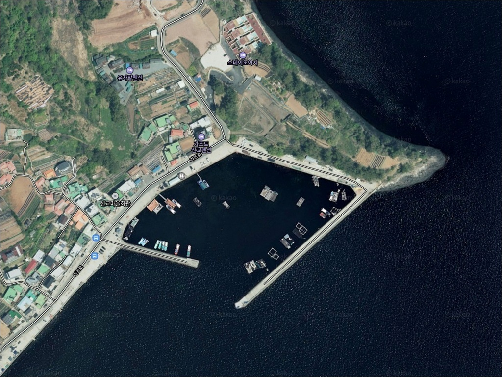
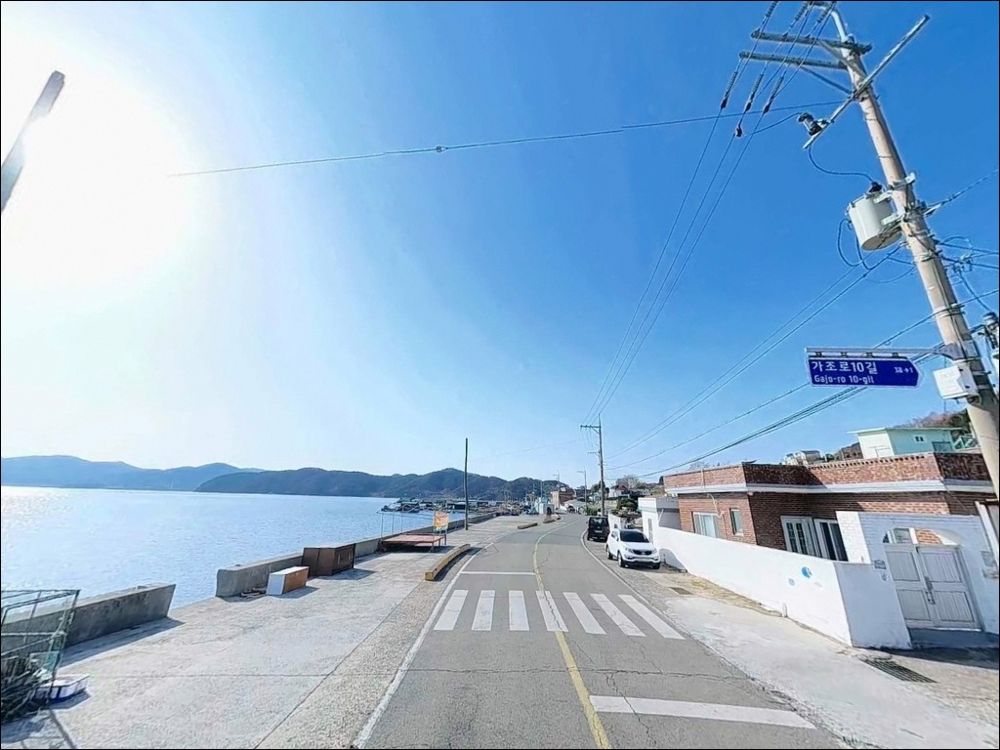
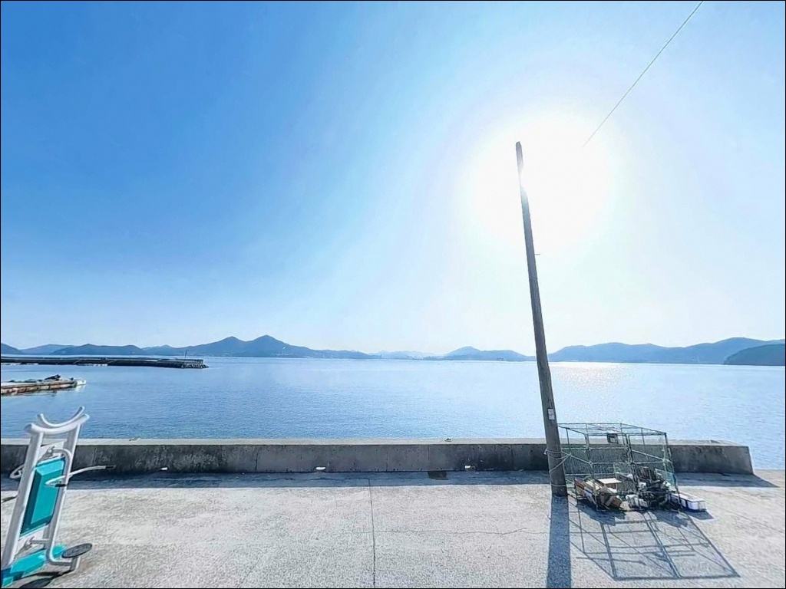
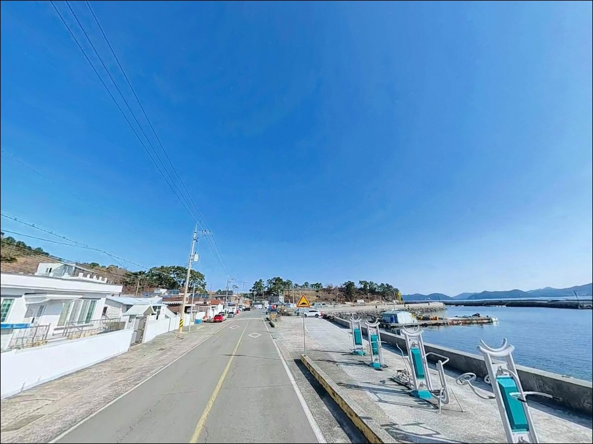
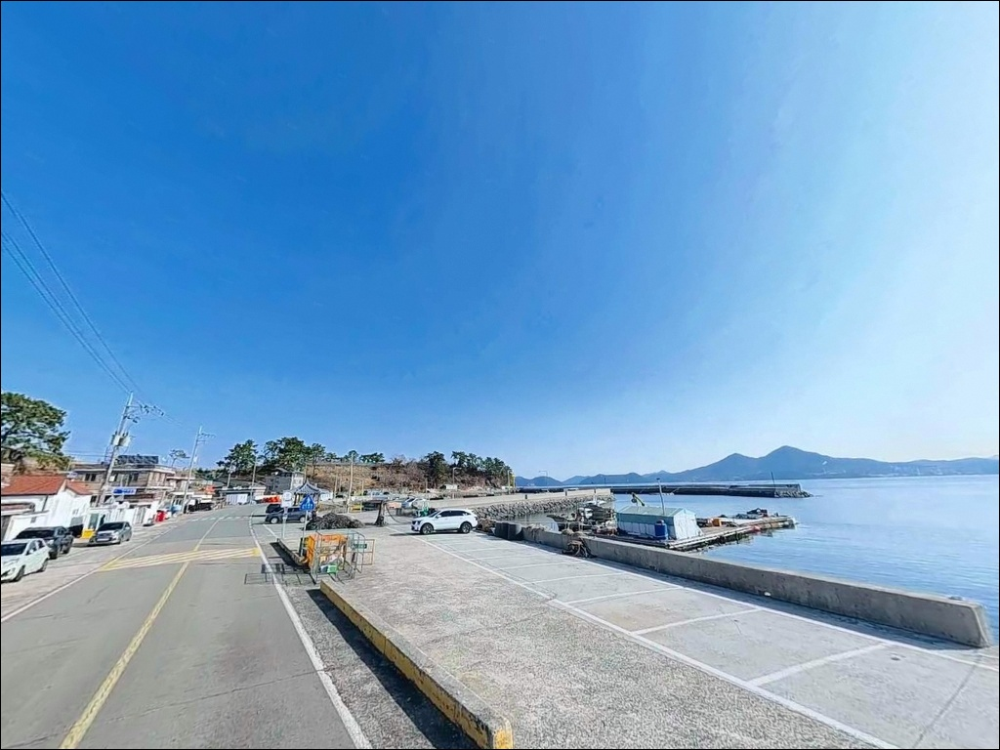
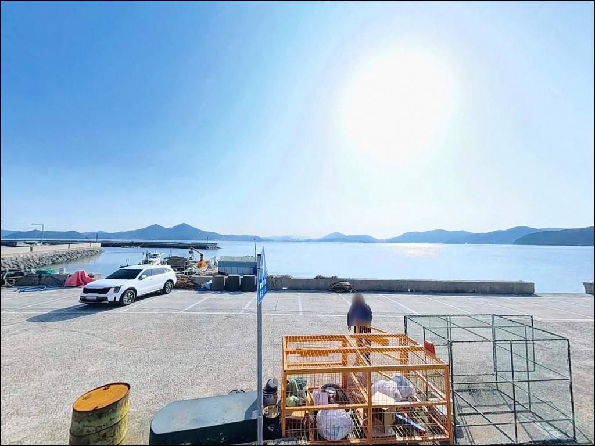
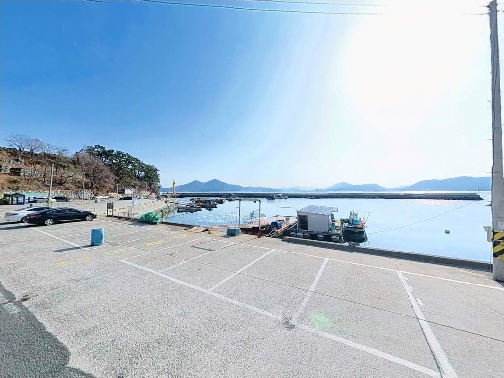
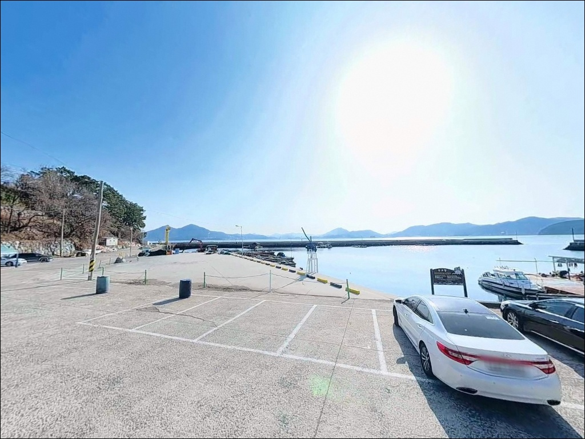
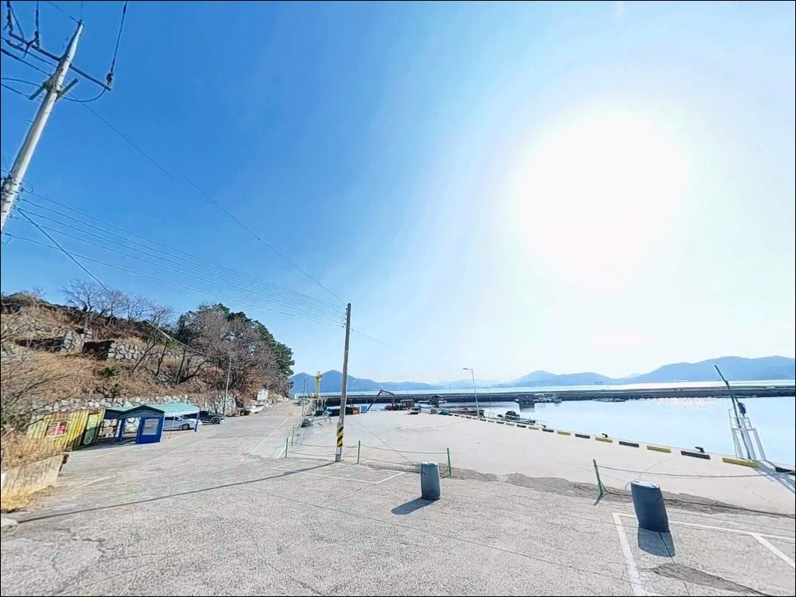

조류 강해 채비 흩어질 때, 가조도 신교항 들물 전환 30분에 살아난 입질


포인트 안내
신교항
경남 거제시 사등면 창호리 21-17
가조도와 거제도 본섬 사이 해협 조류를
무시하고 외항 방파제 끝단에 자리를 잡으면,
사리 전후 강한 조류 구간에서
어떤 채비를 써도 흐름을 버티기 어렵습니다.
신교항은 해협 조류가 방파제 끝단으로
직접 유입되는 구조를 갖고 있어,
들물 전환 타이밍을 먼저 계산하고
입장하는 것이 조과를 결정하는 기본 조건입니다.
경남 거제시 사등면 창호리,
가조연륙교를 건너 섬 동측 해안도로를 따라
진입하면 닿는 신교항은
2003년 어촌정주어항으로 지정된
공식 등록 어항입니다.
수역 61,400㎡ 규모의
L자형 방파제 구조를 갖추고 있으며,
가조도 낚시 일주 코스에서
빠지지 않는 베이스 포인트입니다.
이 글은 신교항의
진입 동선, 차박 여건, 물때 판단 기준,
낚시 스타일별 공략 조건에 집중합니다.
조황 단정이나 특정 어종 보장은
이 글의 범위에 포함되지 않습니다.

1. 진입 동선과 포인트 접근성
신교항은 가조연륙교(680m, 왕복 2차선)를
건너 가조도로 진입한 뒤
섬 해안도로를 따라 이동하면 됩니다.
연륙교 구간은 왕복 2차선으로
캠핑카와 대형 SUV도 진입에 어려움이 없습니다.
다만 창호초등학교를 지나
신교마을 방향으로 접어드는 구간부터는
1~1.5차선 수준의 마을도로가
이어지는 편입니다.
신교항 내 육역 면적은 10,860㎡로
소형 어항 기준으로 공간이 확보된 구조입니다.
주차 후보는 어항 선착장 앞 평지 공터와
방파제 초입부 도로변 공간 두 곳입니다.
승용차 기준 2~4대 수용이 가능하며,
어선 하역 동선과 겹치지 않는
방파제 초입 쪽 공간이
낚시 접근성도 높습니다.
캠핑카나 대형 차량은 방파제 앞
회차 공간이 넉넉하지 않을 수 있으므로,
초행이라면 가조연륙교를 건너기 전
성포리 일대 넓은 도로변에서
위성지도로 진입 동선을 미리 확인하고
출발하는 편이 안전합니다.

2. 차박 환경과 야간 체류 여건
신교마을은 가조도 동측 해안의
소규모 어촌 마을입니다.
민가 밀집도가 낮고 야간 차량 통행이
거의 없는 편이라,
방파제 앞 공터에 차를 세우고
하룻밤 머무는 환경으로
프라이버시 확보는 양호한 구조입니다.
항구를 따라 가로등이 설치되어 있어
야간 밤낚시 여건도 기본 이상입니다.
가조도-거제도 해협 방향으로
외항이 열려 있는 구조상
북동풍 계열 기상에서는
방파제 발판에 바람이 직접 들어오는 경향이 있습니다.
차박 체류 시 바람 방향을 미리 확인하고,
내항 방향으로 차를 돌려
바람막이를 활용하는 배치가 유효합니다.
이른 아침 어선 출항이 04~05시 사이에
이루어지는 점은 감안해야 합니다.
선착장 구간에 주차한 경우
어선 이동 동선에서 벗어난 자리를
미리 확인해 두는 것이 기본 매너입니다.


3. 주변 편의시설 및 인프라 현황
신교항 방파제 초입 창호리 21-17 일대에
공중화장실이 위치합니다.
장거리 출조 시 가장 먼저 확인하는
화장실 여건이 해결되어 있어
장시간 체류에도 기본 여건은 갖춰진 구조입니다.
가조도 섬 내부에는 대형 편의시설이 없습니다.
반경 3km 이내에서는
낚시용품점(오고가고낚시, 성포로 191-2)과
마을 단위 소형 상점이 있는 수준이며,
대형 마트나 편의점은 기대하기 어렵습니다.
가조연륙교를 건너기 전 성포리 일대에서
식수, 얼음, 낚시 소품을
사전에 충분히 챙겨 출발하는 것이
현실적인 준비 방식입니다.
응급 상황 발생 시 고현 시가지까지
가조연륙교 기준 8~10km 거리입니다.
24시 약국과 대형 병원이
거제 고현 방향에 집중되어 있으므로,
비상약품은 출발 전 반드시 준비해 두어야 합니다.

4. 방문 전 반드시 챙겨야 할 준비사항
신교항 방문 전 가장 먼저 확인할 것은
물때입니다.
가조도-거제도 사이 해협 구간은
조류가 빠르기로 알려진 해역으로,
사리 전후에는 방파제 끝단 발판에서
채비 컨트롤 자체가 어려워집니다.
바다타임(badatime.com)에서
신교항 기준 물때를 확인하고,
들물 전환 타이밍에 맞춰 출발 시각을 잡는 것이
기본 전략입니다.
외항 방파제 끝단은 석축 구조입니다.
조류가 강한 시간대에는 발판이
이끼로 인해 미끄러울 수 있어
미끄럼 방지 신발 착용이 필수입니다.
구명조끼는 방파제 끝단 낚시 시
반드시 착용하는 것이 원칙이며,
야간 낚시 시에는
헤드랜턴도 별도로 준비해야 합니다.
가조도는 낚시 쓰레기 문제로
민감하게 관리되는 지역입니다.
채비 잔재와 밑밥 봉지를 포함한
모든 낚시 쓰레기는 전량 수거해 귀가하는 것이
이 포인트를 지키는 가장 기본적인 매너입니다.

5. 외항 자리 선택 전에 확인해야 할 조류 조건
신교항의 핵심은 가조도와 거제도 사이
해협이 만들어내는 조류 흐름입니다.
L자형 방파제는 이 해협을 향해 구성되어 있으며,
방파제 끝단(콧부리) 구간에서
조류가 변곡되는 흐름이 형성됩니다.
들물 전환 직후 30분~1시간이
조류가 안정되면서 채비 운용이
가장 수월해지는 시간대입니다.
수심은 내항 기준 간조 시 3m 내외,
외항 방파제 끝단 구간은 6~8m 내외를 유지합니다.
끝단 주변에는 수중 암초(수중여)가 발달해
어군 형성 조건이 갖춰진 구조입니다.
내항 쪽은 수심이 얕고 어선 정박 구간이 있어
낚시보다는 선착 기능 위주의 공간이며,
외항 방파제 중간 꺾임 구간과
끝단이 주요 낚시 자리입니다.
신교항 외항 방파제 끝단은
가조도와 거제도 사이 해협 조류를 직접 받아
릴찌낚시 반응이 살아나는 자리입니다.
바닥은 사질과 펄이 혼합된 구조로
원투 채비를 운용하기에
밑걸림이 심하지 않은 편입니다.
최신 조황은 출조 전 "가조도 신교항 조황" 또는
"가조도 방파제 낚시" 키워드로
반드시 검색해 보시기 바랍니다.


6. 포인트에 어울리는 낚시 스타일
이 포인트에서 가장 잘 맞는 낚시는
릴찌낚시입니다.
외항 방파제 콧부리와 중간 꺾임 구간은
조류 흐름을 활용하는 반유동 채비가
안정적으로 운용되는 수심 조건을 갖추고 있습니다.
봄·가을 감성돔 시즌에
들물 전환 타이밍을 집중 공략하는
방식이 이 지형에 잘 맞습니다.
에깅도 이 포인트에 어울리는 스타일입니다.
방파제 외항 측 수중여 주변은
갑오징어가 머무는 지형 조건을 갖추고 있으며,
야간에는 가로등 아래 집어된 볼락을
소형 지그헤드 채비로 노리는
볼락 라이트게임이 유효합니다.
가을에는 무늬오징어 에깅도
이 일대 해역에서 성과를 내는 방식입니다.
원투낚시는 방파제 외항 방향으로
사질+펄 바닥을 향해 채비를 멀리 보내는 구조입니다.
붕장어와 노래미를 기대할 수 있으며,
봄철에는 도다리도
이 일대 해역에서 노려볼 수 있는 어종입니다.
조류가 느려지는 정조 타이밍에
채비를 안정적으로 깔아 두는 방식이
이 포인트 원투낚시의 기본 운용법입니다.

7. 대안 포인트와 플랜 B 동선
신교항 조류가 너무 강하거나
주차 공간이 여의치 않을 때
가장 먼저 이동할 곳은
창촌방파제입니다.
신교항에서 약 1.5~2km 거리로
가조도 내에서 규모가 가장 큰 방파제입니다.
외항 수심 6m 내외, 감성돔과 갑오징어 포인트로
알려진 곳으로,
방파제 앞 공간이 신교항보다 넓어
차량 회차도 수월합니다.
창촌방파제가 혼잡한 경우에는
같은 창호리 해안선에 자리한
창호초등학교 앞 방파제가
약 0.5~1km 거리의 대안입니다.
원투 채비로 도다리와 볼락을 기대할 수 있으며,
주차 공간이 신교항보다 넓다는
점도 장점입니다.
가조연륙교 건너 거제도 본섬 방향으로
이동하면 성포항 일대가 있습니다.
인프라가 더 완벽하게 갖춰진 포인트로,
편의시설 보충과 포인트 탐색을
동시에 해결하기 좋은 동선입니다.
가조연륙교를 건너기 전에
성포리 일대에서 물자를 미리 챙기는 것이
가조도 낚시 출조의 기본 준비입니다.

조류를 읽을 줄 알면
신교항이 달라 보입니다
릴찌낚시나 에깅을 즐기는 낚시인이라면
신교항의 외항 방파제 끝단 구조는
잘 맞는 지형입니다.
해협 조류가 만드는 변곡 지점과
수중여 발달 환경이 복합 공략을 가능하게 하며,
원투낚시까지 병행할 수 있어
다양한 채비를 갖춰 온 낚시인에게
하루 일정으로 충분한 포인트입니다.
반면 사리 전후 조류 세기를 사전에 확인하지 않거나,
가조도 특성상 섬 안 편의시설을 기대하고
자급 준비 없이 진입하면
불필요한 시간 낭비가 생깁니다.
물때 확인, 가조연륙교 건너기 전 물자 보충,
진입로 사전 확인,
이 세 가지를 갖추고 가면
가조도 낚시 일주 코스의
베이스 포인트로 손색이 없는 곳입니다.
공중화장실이 갖춰진 방파제 앞 공터에서
차 한 대 세우고 해협 조류를 바라보며
하룻밤 머무는 차박 낚시 일정이라면,
신교항은 차분하고 실속 있는 선택입니다.